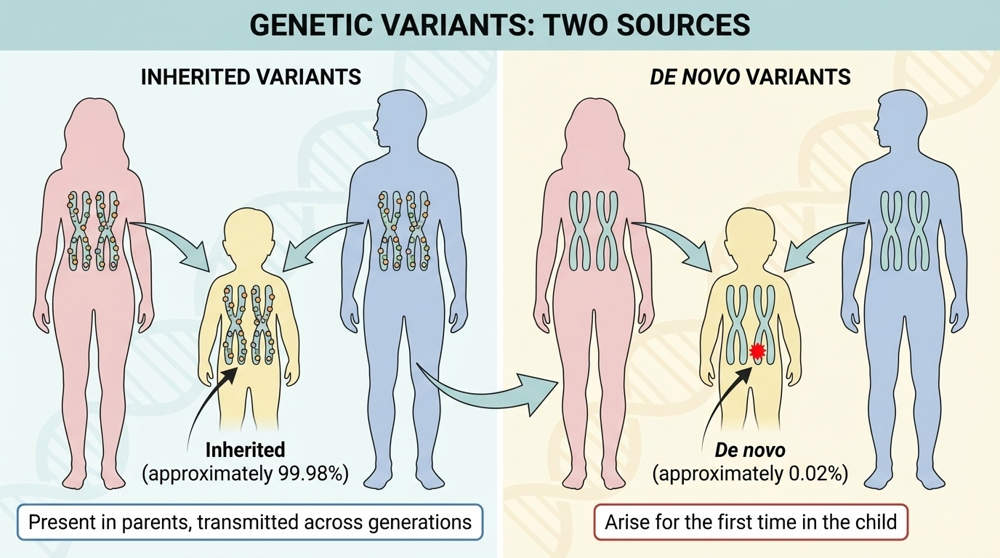
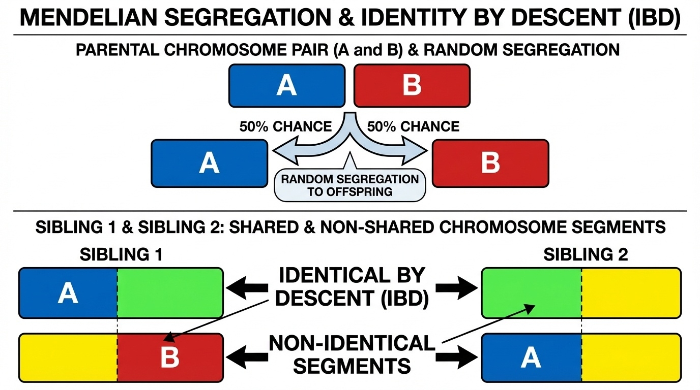
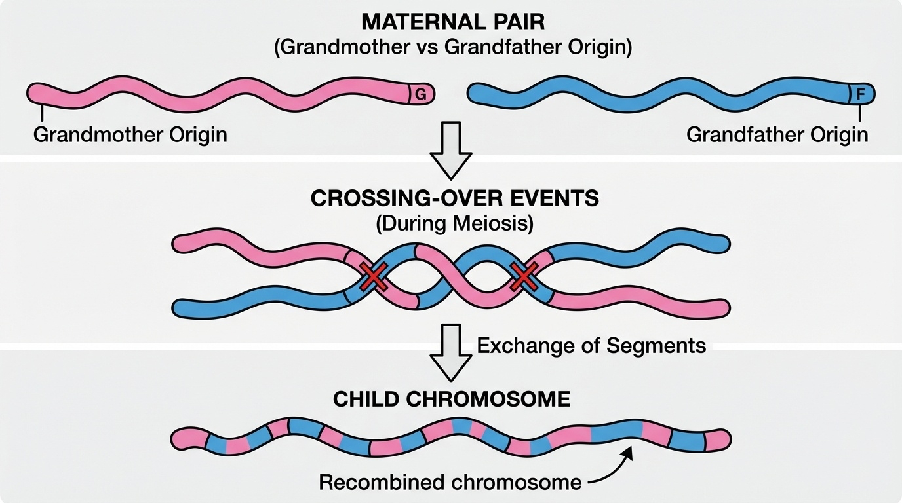
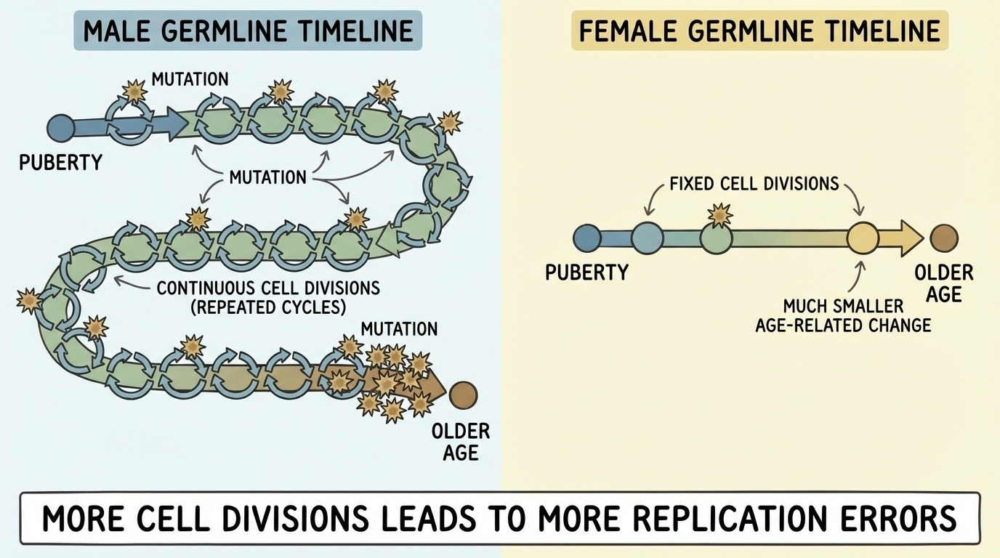
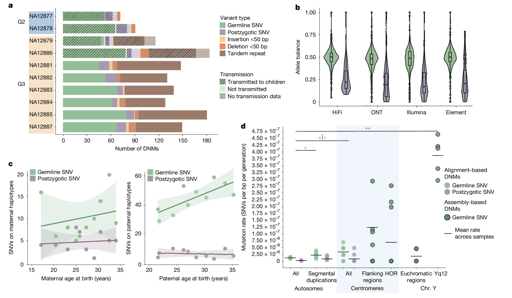

You have ~4 million variants. Where did they come from?
Two sources · two very different stories
Inherited
~99.98% of your variants
Already in mom or dad
Travel through populations
Follow Mendel's laws
De novo
~0.02% of your variants
Not in either parent
Brand new in you
~70 per generation
The picture, in one figure

Figure 1. Two sources of genetic variants. Inherited (~99.98%) follow Mendelian segregation across generations. De novo (~0.02%) arise newly during gametogenesis or early embryogenesis — not in either parent.
A memorable hook
Every year your father ages,
you receive ~1.5 more mutations.
A 40-year-old father transmits ~30 more new mutations than a 20-year-old father.
Roadmap for today
Inherited variants and Mendelian segregation
Identity by descent · what relatedness looks like
Recombination · mosaic chromosomes
De novo variants · what they are, why they matter
The paternal age effect · biology and math
Landmark studies · Iceland and the long-read revolution
Clinical implications & summary
§ 1
Inherited Variants
Mendelian segregation · at the DNA level
You got one chromosome copy from each parent at every position
At heterozygous parental sites: random 50/50
At homozygous parental sites: deterministic
Mother A/G · Father G/G
→ child = A/G (50%) or G/G (50%)
Identity by descent · IBD
When you inherit a DNA segment from a relative,
you get an exact copy — identical by descent.
Quantifies relatedness directly from DNA
Foundation of consumer genetics & forensics
Shared segments shrink with each generation
How much DNA do relatives share?
Relationship
% IBD shared
Why
Parent–child
50%
One chromosome copy from them everywhere
Full siblings
~50% (varies)
Each randomly drew one of two parental chromosomes
Grandparent–grandchild
~25%
Two generations of 50% transmission
First cousins
~12.5%
Four meiotic steps from common ancestor
Second cousins
~3.1%
Six meiotic steps
Why siblings are not exactly 50% identical
At each position, both you and your sibling drew a parental chromosome
Three outcomes, three probabilities:
Outcome
Probability
Sharing
Same from both parents
25%
Identical
Same from one parent
50%
Half-identical
Different from both
25%
Non-identical
Average 50% — actual range typically 45–55%.
Mendelian segregation & IBD, in one figure

Figure 2. Each parent randomly transmits one of two chromosomes (50/50) at every position. Siblings inherit different combinations, producing shared and non-shared segments. Average IBD ≈ 50%, observed range ≈ 45–55%.
Recombination · chromosomes are mosaics
Chromosomes do not pass to you intact
Meiosis: crossing over shuffles segments
Your mother's chr-1 = mosaic of her parents' chr-1s
~1–2 crossovers per chromosome per generation
Recombination creates mosaic chromosomes

Figure 3. During meiosis, crossing over exchanges segments between the two parental chromosomes (one from grandmother, one from grandfather). The transmitted chromosome is a mosaic — creating new allele combinations and sibling diversity.
Common vs rare inherited variants
Feature
Common (>1%)
Rare (<1%)
Age
Ancient · thousands–millions of years
Recent · hundreds–thousands
Selection
Survived → usually benign
May be deleterious
Clinical role
Complex-trait risk
Mendelian disease
Example
APOE4 · Alzheimer's risk
BRCA1 family-specific LoF
§ 2
De Novo Variants
What are they?
Mutations not present in either parent
Arose during gametogenesis (sperm/egg formation), or
Arose postzygotic (early embryo) → mosaicism
Found by trio sequencing (child + mom + dad)
How many per person?
~70
de novo single-nucleotide variants (typical short-read estimate)
Long-read sequencing reveals ~100–200 total mutations
Adds repetitive DNA invisible to short reads
Plus indels and structural variants
Why de novo variants matter
Engine of new variation — every common variant started here
Cause severe disorders — autism, achondroplasia, schizophrenia risk
Window into replication biology — mutation patterns reveal repair
Today's polymorphisms
= yesterday's de novo mutations.
§ 3
The Paternal Age Effect
Sperm vs egg · a fundamental asymmetry
Oogenesis (♀)
All eggs made before birth
Arrested until ovulation
~23 cell divisions total
Minimal age effect
Spermatogenesis (♂)
Starts at puberty
Continuous · throughout life
Divisions every ~16 days
Strong age-dependent effect
The math · sperm cell divisions by age
Father's age
Approx. sperm cell divisions
20 years
~150
30 years
~230
40 years
~330
50 years
~430
Each division = one opportunity for a replication error.
The paternal age effect, in one figure

Figure 4. Continuous spermatogenesis means each year of paternal age adds ~1.5 de novo mutations. Oogenesis is essentially complete before birth, so maternal age adds only ~0.4 mutations per year.
Parent-of-origin · 75–81% paternal
~4 : 1
paternal-to-maternal ratio of de novo mutations
Father contributes ~55 SNVs (avg)
Mother contributes ~14 SNVs (avg)
Direct consequence of division counts
Confirmed across many studies
§ 4
Landmark Studies
Kong et al. 2012 · the first direct count
78 Icelandic families · trio sequencing
Mutation rate: 1.20 × 10⁻⁸ per base per generation
~63 SNVs per child (father age ~30)
Paternal age effect: +2 mutations / year
Linked to schizophrenia & autism risk
Jónsson et al. 2017 · the expanded view
1,548 trios · 20× larger than Kong 2012
Paternal effect: +1.51 / year (refined down from +2)
Maternal effect: +0.37 / year — newly detected
Regional hotspots: 50× higher maternal C>G on chr-8p
98–206 total mutations per child — nearly double prior counts
~16% are postzygotic (mosaic) — no parent bias
Hotspots in tandem repeats, centromeres, segmental duplications
The CEPH 1463 pedigree · four generations

Figure 5. Porubsky et al. 2025 (CC-BY 4.0). Long-read sequencing of a four-generation pedigree. Germline SNVs cluster at allele balance ≈ 0.50; postzygotic mutations sit below 0.25. Strong paternal age effect for germline mutations (~+1.55/year), none for postzygotic. Repetitive regions show large excess.
Three studies · same picture, sharper resolution
Study
N families
Tech
Paternal effect
Kong 2012
78
Short-read
+2 / year
Jónsson 2017
1,548
Short-read
+1.51 / year
Porubsky 2025
4-gen pedigree
Long-read
+1.55 / year
Estimate of ~1.5 mutations per paternal year has held up across technologies.
§ 5
Clinical Implications
Paternal age & mutation burden
Father's age
Extra mutations vs age 20
Relative increase
<30
~0–15
baseline
30–40
+15 to +30
~35%
40–50
+30 to +45
~70%
>50
+45 to +60+
>100%
Most are harmless — but disease risk for specific conditions does rise.
Trio sequencing · the standard workflow
Sequence: child + mother + father
↓
Find variants present in child, absent in both parents
↓
Filter: depth, allele balance, mapping quality
↓
Prioritize: LoF / damaging missense in disease genes
Watch out · false positives & mosaicism
Sequencing errors can mimic de novo variants
Parental mosaicism: low-level mutation in some parental cells
Same variant may appear de novo in multiple children
Critical for recurrence-risk counseling
Apparent de novo ≠ truly de novo
until you rule out parental mosaicism.
Inherited vs de novo · summary table
Feature
Inherited
De novo
Per genome
~4–5 million
~70–200
Source
Parents' genomes
New mutations
Age
Ancient–recent
Brand new
Detection
Standard variant calling
Trio sequencing
Inheritance
Mendelian
Not transmitted from parents
Selection filter
Already filtered
Not yet filtered
Clinical role
Common → complex; rare → Mendelian
Severe developmental disorders
§ 6
Summary
What to take away
Variants come from two sources: inherited (~99.98%) & de novo (~0.02%)